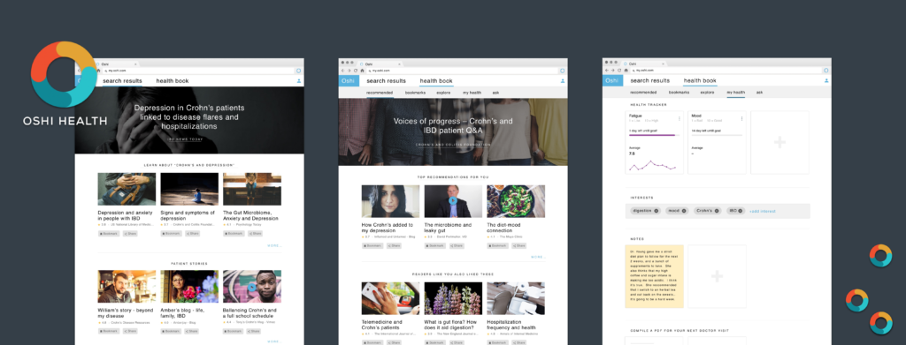
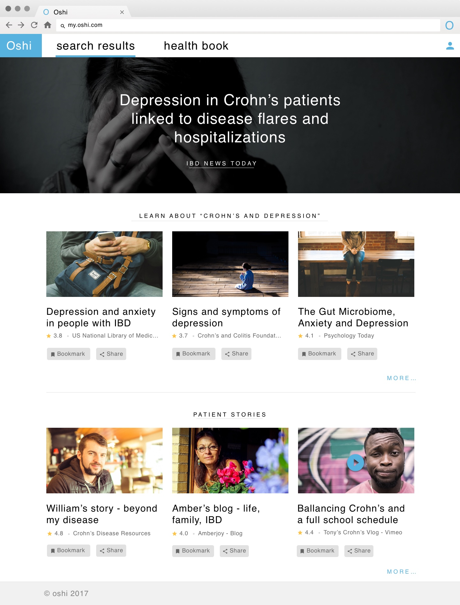
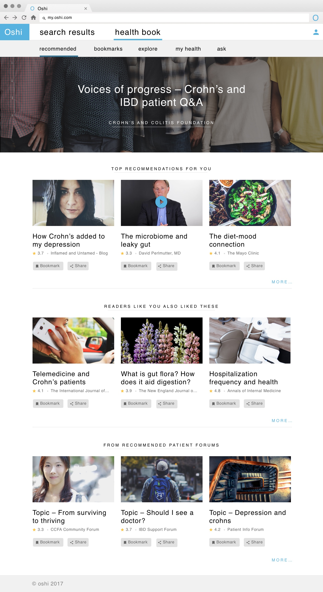
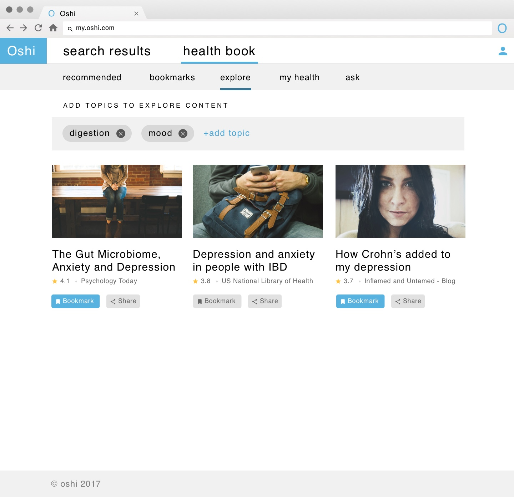
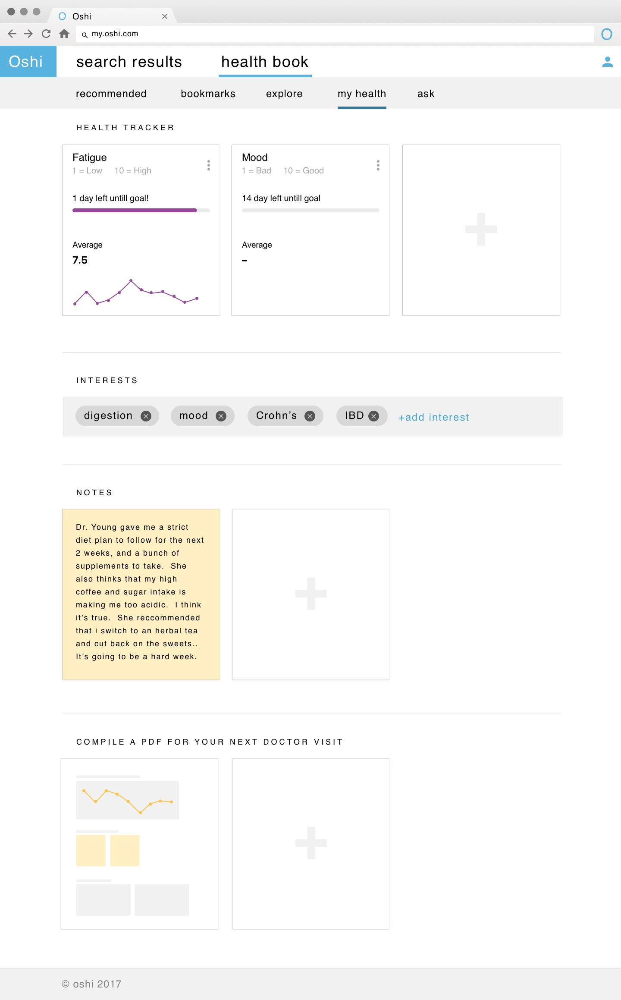
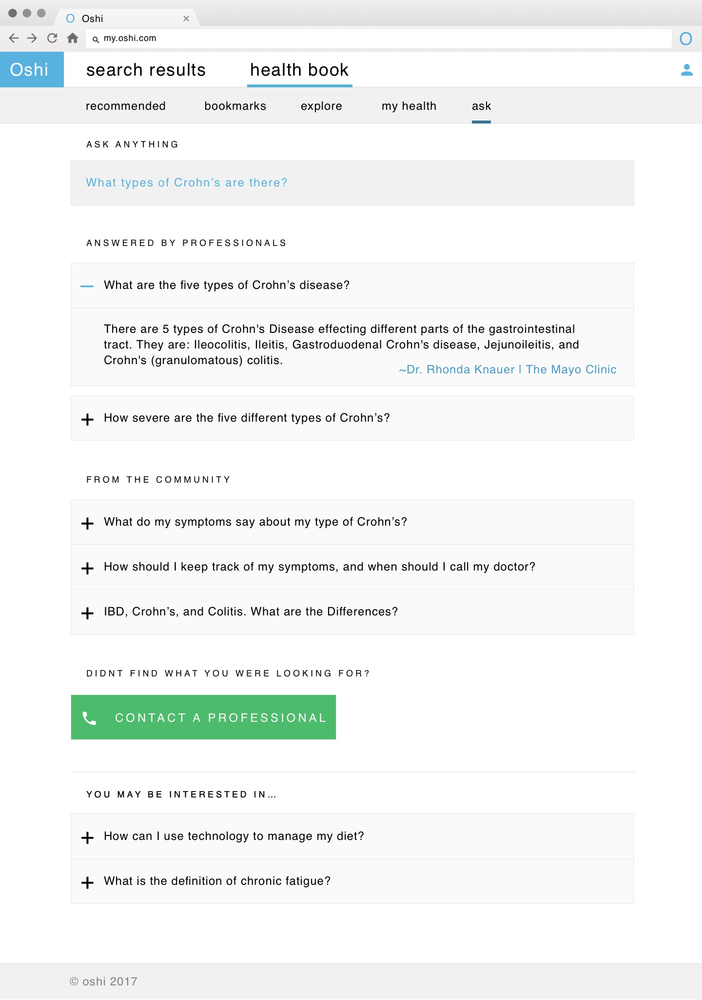
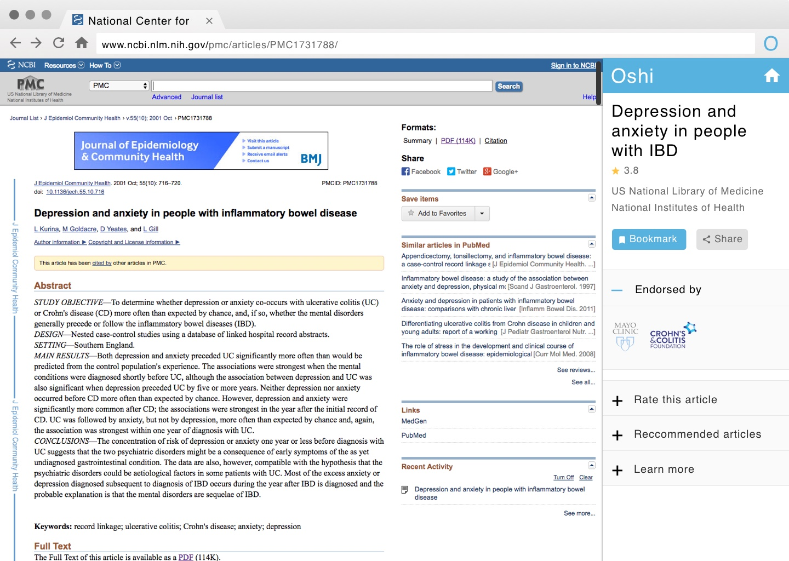

Clickable prototype to win an RFP from a major pharmaceutical company — sharing a vision of total support for IBD patients. The concept became a live iOS and Android product.

Our goal was to win an RFP put forth by a large pharmaceutical company — by sharing a vision of total support for IBD patients. I designed a clickable prototype to help tell the Oshi story, demonstrating how Oshi could help IBD patients manage their disease, educate themselves, and engage with other patients in an online community.
We won the pitch — competing against top-tier design agencies including Frog Design. The original concept in my prototype was a Chrome browser extension for IBD management and education. The final product became a live iOS and Android app.

Search for specific articles

Recommended articles and patient stories

Browse by content type

Track pain, medication, and bowel movement via text

Ask and browse questions — answers provided by doctors and patients

Rate articles, view endorsements, and bookmark for later